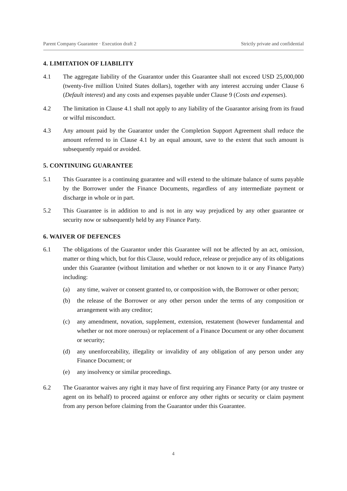

<!DOCTYPE html>
<html lang="en" data-theme="dark">
<head>
<meta charset="utf-8">
<meta name="viewport" content="width=device-width, initial-scale=1">
<title>Adaptive deal screen</title>
<link rel="stylesheet" href="app.css">
<script src="icons.js"></script>
<style>
/* Mock-up only. Every color is an app token or a mix the app already uses. */
.x-stage{display:flex;gap:var(--gap);height:100%;min-height:0;position:relative}
.x-conv{flex:1 1 auto;min-width:0;position:relative;display:flex;flex-direction:column;container-type:inline-size}
.x-head{flex:none;height:40px;display:flex;align-items:center;gap:6px;padding:0 0 0 10px}
.x-trail{display:flex;align-items:baseline;gap:7px;min-width:0;font-size:13px;color:var(--ink-2);white-space:nowrap}
.x-trail b{font-weight:600;color:var(--ink)}
.x-trail .sep{color:var(--ink-3)}
.x-trail .t{overflow:hidden;text-overflow:ellipsis;min-width:0}
.x-head .x-acts{margin-left:auto;display:flex;align-items:center;gap:6px;flex:none}
.x-head .hsel{display:inline-flex;align-items:center;gap:4px}
.x-head .hsel .chev{opacity:.7;display:inline-grid}
.btn.sm.ico{width:28px;padding:0}
.x-toggle{position:relative}
.x-toggle .dot{position:absolute;top:4px;right:4px;width:7px;height:7px;border-radius:50%;background:var(--accent);box-shadow:0 0 0 2px var(--surface)}
.x-scroll{flex:1 1 auto;min-height:0;overflow:auto;scrollbar-width:none;padding:6px 20px 150px;-webkit-mask-image:linear-gradient(to bottom,transparent 0,transparent 30px,var(--mask) 64px);mask-image:linear-gradient(to bottom,transparent 0,transparent 30px,var(--mask) 64px)}
.x-col{max-width:740px;margin:0 auto}
.x .msgs{gap:16px;padding-top:4px}
.x .msgs .ai{font-size:14px;line-height:1.5;max-width:min(72ch,100%);min-width:0}
.x .rsch-pill,.x .rsch-chip{max-width:100%}.x .rsch-chip .docnm{display:block;overflow:hidden;text-overflow:ellipsis;min-width:0;white-space:nowrap}
.x .msgs .ai p{margin:0 0 8px}
.x .msgs .ai p:last-of-type{margin-bottom:0}
.x .msgs .me{font-size:13.5px;max-width:70%;padding:8px 13px}
.x .rsch{min-width:0;max-width:100%;display:flex;flex-direction:column;gap:6px;margin-bottom:10px}
.x .rsch-pill{height:28px;font-size:12.5px}
.x .rsch-chip{height:26px;font-size:12px}
.x .rsch-chip em{font-style:normal;color:var(--ink-3)}
.x .rsch-chip svg{color:var(--ink-3)}
.x .ref .rb{text-decoration:underline dotted var(--ink-3);text-underline-offset:4px;text-decoration-thickness:1px}
.x .acts{display:flex;gap:14px;margin-top:8px;color:var(--ink-2)}
.x .acts svg{display:block}
.x .acts .ib{display:grid;place-items:center;padding:0;border:0;background:none;color:inherit}
.x-card{display:flex;align-items:center;gap:12px;margin-top:10px;padding:10px 12px 10px 14px;border-radius:var(--r-card);background:var(--card);border:1px solid var(--line);font-size:13px;max-width:min(520px,100%);box-sizing:border-box;min-width:0}
.x-card .k{display:flex;flex-direction:column;min-width:0;flex:1 1 auto;gap:1px}
.x-card .k > span:not(.x-live){overflow:hidden;text-overflow:ellipsis;white-space:nowrap}
.x-card .k b{font-weight:600;color:var(--ink)}
.x-card .k span{color:var(--ink-2);font-size:12px}
.x-card .btn{margin-left:auto;flex:none}
.x-ring{flex:none;display:grid;place-items:center;color:var(--accent)}
.x-ring svg{display:block}
.x-composer{position:absolute;left:20px;right:20px;bottom:0;z-index:5}
.x-composer .askbox{max-width:740px;margin:0 auto;padding:12px 12px 10px;gap:6px}
.x .askbox textarea{font-size:14px;line-height:22px;min-height:22px;height:22px;padding:0 4px}
.x .askbox .scopebtn{height:28px;padding:0 10px;font-size:12px}
.x .askbox .send{width:30px;height:30px}
.x .askbox .send svg{width:15px;height:15px}
@container (max-width:440px){.x-composer .scopebtn .t{display:none}.x-composer .scopebtn{padding:0;width:28px;justify-content:center}.x-composer .scopebtn.mode{width:auto;padding:0 10px}}
/* empty deal: Home's layout, scoped to the deal */
.x-empty{flex:1 1 auto;display:flex;flex-direction:column;justify-content:center;padding:0 20px 56px}
.x-empty .center{width:100%;max-width:740px;margin:0 auto}
.x-empty .ttl{font:600 24px/1.15 var(--display);letter-spacing:-.4px;text-align:center;margin:0 0 14px}
.x-empty .askbox textarea{min-height:44px;height:44px}
/* the pane */
.x-pane{flex:0 0 var(--pw,520px);min-width:0;border-radius:var(--r-pane);display:flex;flex-direction:column;position:relative;overflow:visible;container-type:inline-size}
.x-pane>.inner{display:flex;flex-direction:column;min-height:0;height:100%;border-radius:inherit;overflow:hidden;position:relative;z-index:1}
.x-grip{position:absolute;left:-8px;top:50%;width:4px;height:40px;margin-top:-20px;border-radius:999px;background:var(--tick);z-index:3}
.x-grip.drag{background:var(--ink-3)}
.x-tabs{flex:none;display:flex;align-items:flex-end;height:46px;padding:0 10px 0 16px;box-shadow:inset 0 -1px 0 var(--line);gap:8px;min-width:0}
.x-tab{display:inline-flex;align-items:center;gap:6px;padding:0 2px 11px;border-bottom:2px solid transparent;font-size:13px;color:var(--ink-2);white-space:nowrap;min-width:0;flex:0 1 auto}
.x-tab .l{overflow:hidden;text-overflow:ellipsis;min-width:0}
.x-tab .n{font-size:12px;color:var(--ink-3);flex:none}
.x-tab .run{width:6px;height:6px;border-radius:50%;background:var(--accent);flex:none}
.x-tab .x{display:grid;place-items:center;color:var(--ink-3);flex:none;margin-left:1px;margin-top:-1px}
.x-tab .x svg{display:block}
.x-tab.on{color:var(--ink);border-bottom-color:var(--accent)}
.x-tab.on .n{color:var(--ink-2)}
.x-tabrow{display:flex;align-items:flex-end;gap:12px;min-width:0;flex:1 1 auto;overflow:hidden;align-self:stretch}
.x-tab.pin{flex:none}
.x-tab:not(.on){flex-shrink:0}
.x-tab:not(.pin):not(.on) .n{display:none}
.x-tab.on{flex-shrink:1;min-width:90px}
.x-tabs .end{margin-left:auto;align-self:center;flex:none;padding-left:4px}
.x-pbody{flex:1 1 auto;min-height:0;overflow:hidden;padding:14px 18px 18px;position:relative}
.x-lbl{font-size:13px;font-weight:600;color:var(--ink-2);display:flex;align-items:baseline;gap:6px;margin:4px 0 8px}
.x-lbl .n{font-weight:500;color:var(--ink-3);font-variant-numeric:tabular-nums}
/* Background tab */
.x-task{padding:12px 4px 12px 2px;border-bottom:1px solid var(--line);display:grid;grid-template-columns:20px minmax(0,1fr) auto;column-gap:10px;align-items:start}
.x-task:last-child{border-bottom:0}
.x-task .ic{padding-top:2px;color:var(--ink-3);display:grid;place-items:center}
.x-task .ic.on{color:var(--accent)}
.x-task .ic svg{display:block}
.x-task .tt{font-size:13.5px;font-weight:600;color:var(--ink);line-height:20px;white-space:nowrap;overflow:hidden;text-overflow:ellipsis}
.x-task .mm{font-size:12px;color:var(--ink-2);line-height:18px;margin-top:1px;font-variant-numeric:tabular-nums}
.x-task .mm .hi{color:var(--high);font-weight:500}
.x-task .act{align-self:start;margin-top:-4px}
.x-task .x-bar,.x-task .x-steps{grid-column:2/4}
.x-bar{height:4px;border-radius:999px;background:var(--bar-track);margin:8px 0 2px;overflow:hidden}
.x-bar i{display:block;height:100%;border-radius:inherit;background:var(--accent)}
.x-steps{margin:10px 0 0;padding:0;list-style:none;display:flex;flex-direction:column;gap:5px;font-size:12.5px;color:var(--ink-2);line-height:18px}
.x-steps li{display:grid;grid-template-columns:14px minmax(0,1fr);gap:8px;align-items:start}
.x-steps li span{overflow:hidden;text-overflow:ellipsis;white-space:nowrap}
.x-steps li i{display:grid;place-items:center;height:18px;color:var(--ink-3)}
.x-steps li i svg{display:block}
.x-steps li.now{color:var(--ink)}
.x-steps li.now i{color:var(--accent)}
.x-steps li.hit i{color:var(--high)}
.x-steps .pip{width:6px;height:6px;border-radius:50%;background:currentColor}
/* report */
.x-rhead{display:flex;align-items:center;gap:8px;margin:0 0 6px}
.x-rhead .seg{flex:none}
.x-rhead .end{margin-left:auto;display:flex;gap:8px}
.x-meta{font-size:12px;color:var(--ink-2);margin:0 0 10px 2px;font-variant-numeric:tabular-nums}
.x-grp{font-size:13px;font-weight:600;color:var(--ink-2);padding:12px 0 6px 12px;display:flex;gap:6px;align-items:baseline}
.x-grp .n{font-weight:500;color:var(--ink-3)}
.x-row{display:grid;grid-template-columns:14px minmax(0,1fr) auto;column-gap:14px;align-items:center;min-height:36px;padding:7px 10px 7px 12px;border-bottom:1px solid var(--line);font-size:13px;color:var(--ink);border-radius:0}
.x-row .mk{min-height:18px}
.x-row .t{line-height:1.4;overflow:hidden;display:-webkit-box;-webkit-line-clamp:2;-webkit-box-orient:vertical}
.x-row .s{font-size:12px;color:var(--ink-2);white-space:nowrap;display:inline-flex;align-items:center}
.x-row.on{background:var(--glass-2);border-radius:var(--r-ctl);box-shadow:inset 0 1px 0 var(--spec),0 0 0 1px var(--glass-edge);border-bottom-color:transparent}
/* issue */
.x-issue .top{display:flex;align-items:center;gap:8px;margin:2px 0 10px}
.x-issue .top .m{font-size:13px;font-weight:600;color:var(--ink-2);line-height:28px}
.x-issue .top .end{margin-left:auto;display:flex;gap:8px}
.x-issue h2{font:600 17px/1.35 var(--body);letter-spacing:-.15px;margin:0 0 10px}
.x-issue .rsch-chips{margin:0 0 12px}
.x-issue p{font-size:14px;line-height:1.5;margin:0 0 16px}
.x-issue .x-lbl{margin-top:18px}
.x-issue .lnk{font-size:14px;text-decoration:underline dotted var(--ink-3);text-underline-offset:4px;text-decoration-thickness:1px}
.x-q{display:grid;grid-template-columns:auto minmax(0,1fr) auto;gap:10px;align-items:baseline;font-size:13px;padding:8px 0;border-bottom:1px solid var(--line)}
.x-q b{font-weight:600}
.x-q .s{color:var(--ink-2);font-size:12px}
.x-issue > .btn.sm{margin-top:14px}
/* document */
.x-docstage{position:absolute;inset:0;overflow:hidden;padding:18px 18px 0;display:flex;justify-content:center}
.x-page{background:var(--paper);color:var(--paper-ink);width:100%;max-width:560px;padding:40px 44px;box-shadow:var(--shadow-page);font:13.5px/1.7 "Times New Roman",Times,serif;min-height:720px}
.x-page .hd{display:flex;justify-content:space-between;font:11px/1 var(--body);color:var(--paper-muted);border-bottom:1px solid var(--paper-rule);padding-bottom:8px;margin-bottom:18px}
.x-page h3{font:700 14px/1.3 var(--body);color:var(--paper-ink);margin:0 0 12px;letter-spacing:.2px}
.x-page p{margin:0 0 10px;display:grid;grid-template-columns:34px minmax(0,1fr)}
.x-page p.sub{grid-template-columns:34px 28px minmax(0,1fr)}
.x-page mark{background:var(--paper-hl);color:var(--paper-ink);padding:1px 0}
.x-docnav{position:absolute;left:50%;transform:translateX(-50%);bottom:14px;display:flex;align-items:center;gap:4px;padding:5px 6px;border-radius:999px;background:var(--capsule);backdrop-filter:blur(24px) saturate(150%);border:1px solid var(--glass-edge);box-shadow:inset 0 1px 0 var(--spec),var(--shadow-pop);white-space:nowrap;max-width:calc(100% - 28px)}
.x-docnav>button{width:30px;height:30px;border:0;border-radius:999px;background:none;color:var(--ink-2);display:grid;place-items:center;flex:none}
.x-docnav>button svg{display:block}
.x-docnav .nm{display:flex;align-items:center;gap:10px;padding:0 10px;font-size:12.5px;color:var(--ink-3);min-width:0}
.x-docnav .nm b{font-weight:500;color:var(--ink);overflow:hidden;text-overflow:ellipsis;min-width:0}
.x-docnav .nm span{flex:none}
/* Q&A */
.x-qact{display:flex;align-items:center;gap:8px}
.x-qtools{display:flex;flex-wrap:wrap;align-items:center;gap:8px;margin:0 0 10px}
.x-qtools .field{flex:1 1 120px;min-width:80px;height:32px;font-size:13px;display:flex;align-items:center;color:var(--ink-3)}
.x-table{font-size:13px}
.x-th,.x-tr{display:grid;grid-template-columns:48px 60px 112px minmax(0,1.3fr) minmax(0,1fr) 70px;column-gap:14px;padding:0 8px 0 4px}
.x-th{font-size:11px;font-weight:600;color:var(--ink-2);height:30px;align-items:center;border-bottom:1px solid var(--line)}
.x-tr{padding-top:9px;padding-bottom:9px;border-bottom:1px solid var(--line);align-items:start;color:var(--ink-2)}
.x-tr .n,.x-th .n{font-variant-numeric:tabular-nums}
.x-tr .q{color:var(--ink);line-height:1.4;display:-webkit-box;-webkit-line-clamp:3;-webkit-box-orient:vertical;overflow:hidden}
.x-tr .r{line-height:1.4;display:-webkit-box;-webkit-line-clamp:3;-webkit-box-orient:vertical;overflow:hidden}
.x-tr .d{font-variant-numeric:tabular-nums;white-space:nowrap}

.x-tr.on{background:var(--card);border-radius:var(--r-ctl)}
@container (max-width:700px){.x-th,.x-tr{grid-template-columns:48px 60px minmax(0,1.2fr) minmax(0,1fr) 70px}.x-th .ws,.x-tr .ws{display:none}}
@container (max-width:520px){.x-th,.x-tr{grid-template-columns:48px minmax(0,1.2fr) minmax(0,1fr) 70px}.x-th .p,.x-tr .p{display:none}}
@container (max-width:760px){.x-qtools .wide{display:none}}
@container (max-width:560px){.x-qtools .field,.x-qtools .seg .c{display:none}}
.x-foot{position:absolute;left:0;right:0;bottom:0;height:44px;display:flex;align-items:center;padding:0 18px;font-size:12px;color:var(--ink-3);border-top:1px solid var(--line);background:var(--glass);backdrop-filter:blur(28px) saturate(150%);font-variant-numeric:tabular-nums}
/* tab treatment B: compact chips (an alternative) */
.x-chips{flex:none;display:flex;align-items:center;gap:6px;overflow:hidden;height:48px;padding:0 10px;box-shadow:inset 0 -1px 0 var(--line);min-width:0}
.x-chip{display:inline-flex;align-items:center;gap:6px;height:28px;padding:0 10px;border-radius:999px;font-size:12px;font-weight:500;color:var(--ink-2);white-space:nowrap;min-width:0;flex:none;background:var(--card);box-shadow:0 0 0 1px var(--line) inset}
.x-chip svg{display:block;flex:none}
.x-chip .ic{display:grid;place-items:center;flex:none;color:var(--ink-3)}
.x-chip .ic.run{color:var(--accent)}
.x-chip:not(.on) .ic.run .x-ring{color:var(--ink-3)}
.x-chip .l{overflow:hidden;text-overflow:ellipsis;min-width:0}
.x-chip .n{color:var(--ink-3);font-variant-numeric:tabular-nums;flex:none}
.x-chip .x{display:grid;place-items:center;color:var(--ink-3);flex:none;margin-right:-3px}
.x-chip.on{background:var(--glass-2);box-shadow:inset 0 1px 0 var(--spec),0 0 0 1px var(--glass-edge);color:var(--ink);flex:0 1 auto}
.x-chip.on .ic{color:var(--ink-2)}
.x-chip.on .ic.run{color:var(--accent)}

.x-chips.io .x-chip:not(.on) .l,.x-chips.io .x-chip:not(.on) .n{display:none}
.x-chips.io .x-chip:not(.on){width:28px;padding:0;justify-content:center}
/* tab treatment S: tabs share the bar's width (the chosen treatment) */
.x-strip{flex:none;display:flex;align-items:center;height:50px;padding:0 10px;box-shadow:inset 0 -1px 0 var(--line);min-width:0}
.x-strip .trk{display:flex;gap:2px;padding:3px;width:100%;min-width:0;border-radius:999px;background:color-mix(in srgb,var(--ink) 6%,transparent);box-shadow:inset 0 0 0 1px var(--line)}
.x-stab{flex:1 1 0;min-width:30px;display:flex;align-items:center;justify-content:center;gap:6px;height:28px;padding:0 10px;border-radius:999px;font-size:12px;font-weight:500;color:var(--ink-2);white-space:nowrap;overflow:hidden}
.x-stab svg{display:block;flex:none}
.x-stab .ic{display:grid;place-items:center;color:var(--ink-3);flex:none}
.x-stab .l{overflow:hidden;text-overflow:ellipsis;min-width:0}
.x-stab .n{color:var(--ink-3);flex:none}
.x-stab .x{display:grid;place-items:center;color:var(--ink-3);flex:none;margin-left:auto}
.x-strip .trk.allico .x-stab.on{flex:1 1 auto;max-width:none}
.x-stab.on{flex:0 0 auto;max-width:68%;min-width:120px;background:var(--glass-2);box-shadow:inset 0 1px 0 var(--spec),0 0 0 1px var(--glass-edge),0 1px 3px var(--inset-edge);color:var(--ink);justify-content:flex-start}
.x-stab.on .ic{color:var(--ink-2)}
.x-stab:not(.on) .ic .x-ring{color:var(--accent)}
.x-stab.on .ic .x-ring{color:var(--accent)}
.x-strip .trk.one{width:auto}.x-strip .trk.one .x-stab{flex:none}
/* a lone tab fits its name */
.x-strip .trk.one .x-stab.on{min-width:max-content;padding-right:14px}
/* a chat card's mark sits on its title line, as in the task list */
.x .x-card > .x-ring{align-self:flex-start;margin-top:1px}
.x-stab.tight .n{display:none}
.x-stab.ico .l,.x-stab.ico .n{display:none}
.x-stab.ico{padding:0;flex:0 0 34px}
/* a running tab keeps its name beside the ring */
.x-stab.keep{flex:0 0 auto}
.x-stab.keep .n{display:none}
/* tab treatment A: segmented */
.x-segtabs{flex:none;display:flex;align-items:center;height:52px;padding:0 10px;box-shadow:inset 0 -1px 0 var(--line);min-width:0}
.x-segtabs .seg{min-width:0;max-width:100%}
.x-segtabs .seg button{display:inline-flex;align-items:center;gap:5px;min-width:0;max-width:150px;overflow:hidden;flex:0 1 auto}
.x-segtabs .seg button span{overflow:hidden;text-overflow:ellipsis;min-width:0}
.x-segtabs .seg button i{width:6px;height:6px;border-radius:50%;background:var(--accent);flex:none}
/* tab treatment C: browser-style strip */
.x-btabs{flex:none;display:flex;align-items:flex-end;gap:2px;height:44px;padding:0 10px;min-width:0;position:relative;overflow:hidden}
.x-btabs::after{content:"";position:absolute;left:0;right:0;bottom:0;border-bottom:1px solid var(--line)}
.x-btab{display:inline-flex;align-items:center;gap:6px;height:34px;padding:0 12px;border-radius:10px 10px 0 0;font-size:12px;font-weight:500;color:var(--ink-2);white-space:nowrap;min-width:34px;flex:0 1 auto;position:relative;z-index:1;border:1px solid transparent;border-bottom:0}
.x-btab svg{display:block;flex:none}
.x-btab .ic{display:grid;place-items:center;color:var(--ink-3)}
.x-btab .l{overflow:hidden;text-overflow:ellipsis;min-width:0}
.x-btab .n{color:var(--ink-3)}
.x-btab:not(.on) .n{display:none}
.x-btab.ico .l{display:none}
.x-btab.ico{flex:none;padding:0 10px}
.x-btab{overflow:hidden}
.x-btab .x{display:grid;place-items:center;color:var(--ink-3);margin-right:-3px}
.x-btab.on{background:var(--glass-2);border-color:var(--glass-edge);box-shadow:inset 0 1px 0 var(--spec);color:var(--ink);flex:0 0 auto;max-width:60%;height:36px;margin-bottom:-1px;z-index:2}
.x-btab:not(.on)+.x-btab:not(.on)::before{content:"";position:absolute;left:-2px;top:10px;height:14px;border-left:1px solid var(--line)}
@container (max-width:400px){.x-btab:not(.on) .l,.x-btab:not(.on) .n{display:none}
.x-btab.ico .l{display:none}
.x-btab.ico{flex:none;padding:0 10px}}
/* switcher (not offered) */
.x-switch{flex:none;display:flex;align-items:center;gap:8px;height:48px;padding:0 10px;box-shadow:inset 0 -1px 0 var(--line);min-width:0;position:relative;z-index:5}
.x-switch .pick{display:inline-flex;align-items:center;gap:6px;min-width:0;max-width:calc(100% - 44px)}
.x-switch .pick .l{overflow:hidden;text-overflow:ellipsis;min-width:0}
.x-switch .pick .chev{display:inline-grid;opacity:.7;flex:none}
.x-switch .pick>svg{flex:none;color:var(--ink-2)}
.x-switch .end{margin-left:auto;display:flex;gap:8px}
.x-menu{position:absolute;z-index:80;width:300px;padding:8px;border-radius:12px;background:var(--glass-2);border:1px solid var(--glass-edge);backdrop-filter:blur(12px) saturate(150%);box-shadow:inset 0 1px 0 var(--spec),inset 0 -1px 0 var(--inset-edge),var(--shadow-pop);background-image:linear-gradient(135deg,var(--glass-sheen),transparent 40%)}
:root[data-theme="light"] .x-menu{background:color-mix(in srgb,var(--menu-solid) 36%,transparent)}
.x-menu .mi{display:flex;align-items:center;gap:8px;height:32px;padding:0 10px;border-radius:8px;font-size:13px;color:var(--ink);white-space:nowrap}
.x-menu .mi svg{display:block;flex:none;color:var(--ink-2)}
.x-menu .mi .l{overflow:hidden;text-overflow:ellipsis;min-width:0;flex:1 1 auto}
.x-menu .mi .n{color:var(--ink-3);font-variant-numeric:tabular-nums}
.x-menu .mi.ch{background:var(--mi-chosen)}
.x-menu .mi .ck{display:grid;place-items:center;width:14px;flex:none}
.x-menu .mi .x-ring svg{color:var(--accent)}
.x-menu hr{border:0;border-top:1px solid var(--line);margin:6px 2px}
/* in-process marks */
.x-work{display:inline-flex;align-items:center;gap:6px;color:var(--ink-2);font-size:12px;white-space:nowrap}
.x-work .x-ring,.x-status .x-ring{color:var(--accent)}
.x-status{display:flex;align-items:center;gap:8px;font-size:12px;color:var(--ink-2);margin:0 0 10px;padding:0 2px;min-width:0}
.x-status span:last-child{overflow:hidden;text-overflow:ellipsis;white-space:nowrap}
.x-tr .aim{color:var(--accent);font-weight:500}
/* Q&A item, opened above the list as on today's Q&A page */
.x-qcard{border-radius:var(--r-card);background:var(--glass-2);box-shadow:inset 0 1px 0 var(--spec),0 0 0 1px var(--glass-edge);padding:12px 14px 14px;margin:0 0 12px}
.x-qcard .hd{display:flex;align-items:center;gap:8px}
.x-qcard .hd b{font-size:14px;font-weight:600}
.x-qcard .hd .end{margin-left:auto;display:flex;align-items:center;gap:8px}
.x-qcard .hd .pos{font-size:12px;color:var(--ink-3);font-variant-numeric:tabular-nums;margin-right:2px}
.x-qcard .props{display:flex;flex-wrap:wrap;gap:4px 16px;margin:6px 0 2px}
.x-qcard .props span{display:inline-flex;align-items:center;gap:5px;font-size:12px;color:var(--ink-2);height:24px}
.x-qcard .props svg{display:block;color:var(--ink-3)}
.x-qcard .cols{display:grid;grid-template-columns:minmax(0,1fr) minmax(0,1.3fr);gap:18px;margin-top:8px}
@container (max-width:560px){.x-qcard .cols{grid-template-columns:minmax(0,1fr);gap:10px}.x-qcard .hd .pos{display:none}}
.x-qcard .lb{font-size:13px;font-weight:500;color:var(--ink-2);display:flex;align-items:center;gap:8px;margin:0 0 6px}
.x-qcard .lb .aim{color:var(--accent);font-size:12px;font-weight:500}
.x-qcard .lb .sub{display:inline-flex;align-items:center;gap:5px;font-size:12px;font-weight:400;color:var(--ink-2)}
.x-qcard .lb .sub svg{display:block;color:var(--ink-3)}
.x-qcard .resp{border:1px solid var(--line);background:var(--card);border-radius:var(--r-ctl);padding:8px 11px;font-size:13.5px;line-height:1.55}
.x-qcard .qt{font-size:13.5px;line-height:1.55;margin:0}
.x-qcard .draft{border:1px dashed var(--ink-3);border-radius:var(--r-ctl);padding:8px 11px;font-size:13.5px;line-height:1.55}
.x-qcard .rsch-chips{margin:8px 0 0}
.x-qcard .acts2{display:flex;gap:8px;margin-top:10px}
.x-tr.on{background:var(--card);border-radius:var(--r-ctl)}
/* slim rail, as reading mode's */
#app.slim{grid-template-columns:48px minmax(0,1fr)}
.x-slim{display:flex;flex-direction:column;align-items:center;padding:12px 0;gap:8px}
.x-slim .railx{width:30px;height:30px;border-radius:9px;border:1px solid var(--line);background:var(--card);color:var(--ink-2)}
.x-slim .sp{flex:1}
.x-slim .railx{display:grid;place-items:center;padding:0}
.rail .brand .x-sidetog{margin-left:auto}
/* the sidebar toggle shows the panel icon mirrored, so its divider sits on the left */
.x-sidetog svg{transform:scaleX(-1)}
.rail .brand .x-sidetog + .plus{margin-left:6px}
.x-slim{padding-top:8px}
.x-slim .railx{border-radius:50%}
/* sidebar: a deal's conversations under it */
.rail a.dealrow.open{font-weight:500}
@media(max-width:1180px){#app:not(.slim){grid-template-columns:208px minmax(0,1fr)}}
.x-tv{display:flex;flex-direction:column;height:100%;min-height:0}
.x-tv .sc{flex:1 1 auto;min-height:0;overflow:hidden;padding:0 2px}
.x-tv .top{display:flex;align-items:center;gap:8px;min-height:28px}
.x-tv .st{display:inline-flex;align-items:center;gap:6px;font-size:12px;color:var(--ink-2);font-variant-numeric:tabular-nums}
.x-tv .st .x-ring{color:var(--accent)}
.x-tv .top .end{margin-left:auto;display:flex;gap:6px}
.x-tv h2{font-size:17px;font-weight:600;letter-spacing:-.01em;margin:6px 0 4px;color:var(--ink)}
.x-tv .ask{font-size:13px;color:var(--ink-2);margin:0 0 12px}
.x-tv .x-lbl{margin-top:14px}
.x-tv .x-steps{margin:0}
.x-tv .x-steps li.todo{color:var(--ink-3)}
.x-tv .x-steps li.now span{white-space:normal}
.x-tv .x-steps .sub{display:block;color:var(--ink-3);font-size:12px}
.x-tv p{font-size:13.5px;line-height:1.45;margin:4px 0 8px;color:var(--ink)}
.x-tv .acts2{display:flex;gap:8px;margin-top:10px}
.x-tv .fold{display:inline-flex;align-items:center;gap:6px;font-size:12.5px;color:var(--ink-2)}
.x-tv .steer{flex:none;padding-top:10px}
.x-tv .steer .askbox{padding:12px 12px 10px;gap:6px}
.x-tv .steer textarea{flex:1}

/* the conversation folded to a strip while the pane takes the room */
.x-cstrip{flex:0 0 48px;display:flex;flex-direction:column;align-items:center;gap:8px;padding:8px 0 12px;min-height:0}
.x-cstrip .sp{flex:1}
.x-cstrip .btn.ico{flex:none}
.x-cstrip .dot{width:6px;height:6px;border-radius:50%;background:var(--accent)}
/* Q&A in the roomy pane: the list beside the opened question */
.x-qlist{margin-top:4px}
.x-qlist .x-lrow{grid-template-columns:48px minmax(0,1fr) auto;padding:10px 10px}
.x-qlist .x-lrow .q{-webkit-line-clamp:unset;display:block}
.x-qlist .x-lrow .q small{display:block;font-size:12px;color:var(--ink-3);margin-top:3px}
.x-qitem .x-qcard{margin:0;padding:14px 16px 16px}
.x-qitem .x-qcard .cols{grid-template-columns:minmax(0,1fr);gap:16px;margin-top:14px}
.x-qitem .x-qcard .qt{font-size:15px;line-height:1.5}
.x-qitem .x-qcard .draft,.x-qitem .x-qcard .resp{font-size:14px;line-height:1.5}
.x-qsplit{display:grid;grid-template-columns:minmax(260px,0.9fr) minmax(0,1.25fr);gap:14px;height:calc(100% - 52px);min-height:0}
.x-qsplit .lst{min-height:0;overflow:hidden}
.x-lrow{display:grid;grid-template-columns:44px minmax(0,1fr) 72px;column-gap:10px;padding:9px 12px;border-bottom:1px solid var(--line);font-size:13px;color:var(--ink-2);align-items:start}
.x-lrow .n{font-variant-numeric:tabular-nums;color:var(--ink-3)}
.x-lrow .q{color:var(--ink);line-height:1.4;display:-webkit-box;-webkit-line-clamp:3;-webkit-box-orient:vertical;overflow:hidden}
.x-lrow .st{text-align:right}
.x-lrow .w{display:flex;align-items:center;gap:5px;justify-content:flex-end;color:var(--ink-2)}
.x-lrow .w .x-ring{color:var(--accent)}
.x-lrow.on{background:var(--glass-2);border-radius:var(--r-ctl);box-shadow:inset 0 1px 0 var(--spec),0 0 0 1px var(--glass-edge);border-bottom-color:transparent}
.x-qsplit .det{min-height:0;overflow:hidden}
.x-qsplit .det .x-qcard{margin:0;background:none;box-shadow:none;padding:4px 6px 0}
.x-qcard .hd .pos{white-space:nowrap}
.x .btn.sm.ico{flex:none;width:28px;height:28px}
.x-qsplit{grid-template-columns:minmax(300px,.8fr) minmax(0,1.2fr)}
.x-qsplit .det .x-qcard .cols{grid-template-columns:minmax(0,1fr);gap:14px}
/* reading mode's page and zoom stack, in the pane */
.x-pgstack{position:absolute;right:16px;bottom:72px;display:flex;flex-direction:column;align-items:center;padding:4px}
.x-pgstack>button{display:grid;place-items:center}
.x-pgstack>button svg{display:block}
.x-docnav .cls{margin-left:2px}
.x-docstage.wide .x-page{max-width:680px}
.x-page.x-pdf{padding:0;min-height:0;background:#fff;height:max-content}
.x-page.x-pdf img{display:block;width:100%;height:auto}
.x-docstage{padding-bottom:16px}

/* work in progress: a small ring beside the live step's words, which shimmer */
.x-shim{background:linear-gradient(90deg,var(--ink-2) 0%,var(--ink-2) 45%,var(--ink-3) 62%,var(--ink-2) 80%,var(--ink-2) 100%);background-size:250% 100%;background-position:20% 0;-webkit-background-clip:text;background-clip:text;color:transparent;animation:xshim 2.4s linear infinite}
@keyframes xshim{from{background-position:100% 0}to{background-position:-150% 0}}
@media (prefers-reduced-motion:reduce){.x-shim{animation:none;background:none;color:var(--ink-2)}}
/* Tasks: one grouped list per state; each row has its state, what it is doing, its time, and its kind */
.x-live{display:flex;flex-wrap:wrap;min-width:0;max-width:100%}
.x-live .lv{min-width:0;max-width:100%;overflow:hidden;text-overflow:ellipsis;white-space:nowrap}
.x-live .mt{flex:none;white-space:nowrap}
.x-live .mt::before{content:"\00a0·\00a0"}
/* when the count and time wrap under the step, they start the line without a separator */
.x-live.wrapped .mt::before{content:none}
.x-live.wrapped .mt{flex-basis:100%}
.x-card .x-live .lv{white-space:normal;display:-webkit-box;-webkit-line-clamp:2;-webkit-box-orient:vertical}
.x-pbody .x-lbl{margin-top:16px}
.x-tgroup{border-radius:var(--r-card);background:var(--card);box-shadow:inset 0 0 0 1px var(--line);overflow:hidden}
.x-trow{position:relative;display:grid;grid-template-columns:16px minmax(0,1fr) auto;column-gap:12px;align-items:start;padding:11px 14px 11px 16px;font-size:13px}
/* rows in a group are split by a hairline inset to the text, as in a desktop grouped list */
.x-trow + .x-trow::before{content:"";position:absolute;top:0;left:44px;right:0;height:1px;background:var(--line)}
.x-trow .mk2{display:grid;place-items:center;height:18px;color:var(--ink-3)}
.x-trow .mk2 svg{display:block}
.x-trow .mk2 .x-ring,.x-trow .mk2 .ask{color:var(--accent);display:grid}
.x-trow .tx{min-width:0}
.x-trow .nm{display:block;color:var(--ink);font-weight:500;line-height:18px;white-space:nowrap;overflow:hidden;text-overflow:ellipsis}
.x-trow .ln{display:block;color:var(--ink-3);font-size:12px;line-height:17px;margin-top:2px;white-space:nowrap;overflow:hidden;text-overflow:ellipsis}
.x-trow .kind{display:inline-flex;align-items:center;gap:3px;height:18px;color:var(--ink-3);font-size:12px;white-space:nowrap}
.x-trow .kind svg{display:block}
/* the live step below a running task's steps: ring, elapsed time, and steps done */
.x-spin{display:flex;align-items:center;gap:8px;padding:6px 2px;font-size:12px;color:var(--ink-3)}
.x-tv .me{margin:6px 0 12px auto;max-width:85%;padding:9px 13px;border-radius:16px;background:var(--card);box-shadow:inset 0 0 0 1px var(--line);font-size:13.5px;line-height:1.45;width:fit-content}
.x-spin .x-ring{color:var(--accent)}
.x-tv .nar{color:var(--ink);margin:10px 0 8px}
/* steps are plain one-line rows */
.x-tool{display:flex;align-items:center;gap:10px;height:26px;padding:0 2px;margin:0;font-size:13px;color:var(--ink)}
.x-tool .ti{display:grid;place-items:center;color:var(--ink-3);width:16px}
.x-tool .ti svg{display:block}
.x-tool .ti .x-ring{color:var(--accent)}
.x-tool.live .tt{color:var(--ink-2)}
.x-tool .tt{min-width:0;overflow:hidden;text-overflow:ellipsis;white-space:nowrap}
.x-tool .tc{margin-left:auto;color:var(--ink-3);font-size:12px;white-space:nowrap}
.x-tool .tv{display:grid;color:var(--ink-3)}
.x-tool .tt + .tv{margin-left:auto}

/* the Checklist page's marks, as app.css draws them on .ckrow (checklist.tsx, Row) */
.x-row .mk{display:grid;place-items:center;align-self:stretch;width:14px}
.x-row .mk.k-finding:before{content:"";background:var(--high);border-radius:2px;width:3px;height:100%}
.x-row .mk.k-gap:before{content:"";box-sizing:border-box;border:1.5px dashed var(--ink-3);border-radius:50%;width:10px;height:10px}
/* a narrow pane drops the filter counts, as the Checklist shortens its filters to stay on one row */
@container (max-width:600px){.x-rhead .seg .c{display:none}}
.x{--gap:8px}
.x .msgs .ai p{line-height:1.5}
.x-tv .nar{margin:8px 0 4px}
.x-qitem .x-lbl{margin-top:18px}
.x-qitem .lnk{font-size:13.5px;text-decoration:underline dotted var(--ink-3);text-underline-offset:4px;text-decoration-thickness:1px}
.x-stab:not(.on):not(.ico){justify-content:flex-start}
.x-tr .r > .aim{display:block}
.x-qcard .x-lbl{margin-top:12px}
.x-qcard .lnk{font-size:13.5px;text-decoration:underline dotted var(--ink-3);text-underline-offset:4px;text-decoration-thickness:1px}
.x-lrow small .w{display:inline-flex;vertical-align:-2px;justify-content:flex-start}
.x-upd{display:inline-block;flex:none;width:6px;height:6px;border-radius:50%;background:var(--accent);margin:0 8px 1px 0;vertical-align:middle}
.rail .grp-h .x-upd{margin:0 8px 1px 0}
.rail a.dealrow.x-arch{position:relative}
.rail a.dealrow.x-arch .x-upd{position:absolute;right:12px;top:13px;margin:0}
.x-deals{display:flex;flex-direction:column;gap:1px;margin:6px 0 10px}
.x-archgrp{margin-top:4px}
.rail a.dealrow.x-arch .dn1{color:var(--ink-2)}
.rail a.dealrow.x-arch:has(.dtw){height:auto;min-height:32px;padding-top:5px;padding-bottom:5px;flex-direction:column;align-items:flex-start;justify-content:center;gap:1px}
.rail a.dealrow.x-arch .dtw{font-size:11.5px;line-height:1.3;color:var(--ink-2)}
.rail .dmore.open{opacity:1}
.x-trail{align-items:center}
.x-head .x-hist{height:28px;min-width:0;max-width:100%;gap:6px;padding:0 10px;font-size:13px;color:var(--ink-2)}
.x-head .x-hist .t{overflow:hidden;text-overflow:ellipsis;white-space:nowrap;min-width:0}
.x-head .x-hist .chev{display:inline-grid;opacity:.7}
.x-head .x-hist.on{color:var(--ink)}
.x-head .x-hist{display:inline-flex;align-items:center;border:1px solid var(--line);background:var(--card);border-radius:999px;font:inherit;font-size:13px;cursor:pointer;outline:0}
.x-head .x-hist:hover{background:var(--card-hover);color:var(--ink)}
/* tabs share the bar's width; words give way to an ellipsis, counts go first */
.x-strip .trk.x-even .x-stab,.x-strip .trk.x-even .x-stab.on{flex:1 1 0;min-width:0;max-width:none;justify-content:center;padding:0 10px;position:relative}
.x-strip .trk.x-even .x-stab .n{display:none}
.x-strip .trk.x-even .x-stab:has(.x){padding:0 26px}
.x-strip .trk.x-even .x-stab .l{flex:0 1 auto}
.x-strip .trk.x-even .x-stab.on .x{position:absolute;right:8px;top:50%;transform:translateY(-50%);margin:0}
.pastpop .prow,.pastpop .prow+.prow{box-shadow:none}
.pastpop .pp,.pastpop .pt{mask-image:none;-webkit-mask-image:none;text-overflow:ellipsis}
.x-scroll.x-dim{opacity:.35;filter:blur(2px)}
/* a hairline between unchosen tabs, none beside the chosen one, which sits raised */
.x-strip .trk.x-even .x-stab+.x-stab::before{content:"";position:absolute;left:0;top:50%;width:1px;height:14px;transform:translateY(-50%);background:color-mix(in srgb,var(--ink) 22%,transparent)}
.x-strip .trk.x-even .x-stab.on::before,.x-strip .trk.x-even .x-stab.on+.x-stab::before{content:none}
.x-strip .trk.x-even{background:color-mix(in srgb,var(--ink) 8%,transparent)}
.x-strip .trk.x-even .x-stab.on{box-shadow:inset 0 1px 0 var(--spec),0 0 0 1px var(--glass-edge),0 1px 2px rgba(0,0,0,.14),0 2px 8px rgba(0,0,0,.10)}
:root[data-theme="light"] .x-strip .trk.x-even .x-stab.on{background:#fff}
:root.x-bw[data-theme="dark"]{--accent:#c3c8ce;--accent-ink:#141516;--light-a:rgba(195,199,204,0.16)}
/* a cut unchosen tab drops its icon before its word */
.x-strip .trk.x-even .x-stab.tight:not(.on) .ic{display:none}
/* a waiting draft is marked with the app's small pill, not a second label */
.x-badge{font-size:11px;font-weight:500;line-height:16px;vertical-align:1px}
/* a conversation starts below the top fade, so its first message is never faded */
.x-scroll .msgs{padding-top:64px}
/* tasks are drawn like a desktop copy or download list */
.x-tile{flex:none;display:grid;place-items:center;width:32px;height:32px;border-radius:8px;background:color-mix(in srgb,var(--ink) 9%,transparent);box-shadow:inset 0 0 0 1px var(--line);color:var(--ink-2)}
.x-tile svg{display:block}
.x-pbar{display:block;height:4px;margin:6px 0 5px;border-radius:2px;background:color-mix(in srgb,var(--ink) 14%,transparent);overflow:hidden}
.x-pbar i{display:block;height:100%;border-radius:inherit;background:var(--accent)}
.x-circ{display:grid;place-items:center;width:18px;height:18px;padding:0;border:0;border-radius:50%;background:color-mix(in srgb,var(--ink) 38%,transparent);color:var(--surface);cursor:pointer}
.x-circ svg{display:block}
.x-prow{position:relative;display:grid;grid-template-columns:32px minmax(0,1fr) auto;column-gap:12px;align-items:center;padding:10px 14px 10px 12px;font-size:13px}
.x-prow + .x-prow::before{content:"";position:absolute;top:0;left:56px;right:0;height:1px;background:var(--line)}
.x-prow .tx{min-width:0}
.x-prow .nm{display:block;color:var(--ink);font-weight:500;line-height:18px;white-space:nowrap;overflow:hidden;text-overflow:ellipsis}
.x-prow .ln{display:block;color:var(--ink-3);font-size:12px;line-height:16px;margin-top:1px;white-space:nowrap;overflow:hidden;text-overflow:ellipsis;font-variant-numeric:tabular-nums}
.x-prow .tr{display:flex;align-items:center}
.x-pcard{align-items:center;padding:10px 12px}
.x-pcard .k{gap:0}
.x-pcard .k > span{font-variant-numeric:tabular-nums;color:var(--ink-3)}
/* compact task rows: name and count on one line, the bar under them at one width for every item */
.x-tile{width:24px;height:24px;border-radius:6px}
.x-prow{grid-template-columns:24px minmax(0,1fr) 18px;column-gap:10px;padding:8px 12px 8px 10px}
.x-prow:has(.btn){grid-template-columns:24px minmax(0,1fr) auto}
.x-prow + .x-prow::before{left:44px}
.x-prow .top,.x-pcard .top{display:flex;align-items:baseline;gap:10px;min-width:0;line-height:18px}
.x-prow .top .nm,.x-pcard .top .nm{flex:0 1 auto;min-width:0;white-space:nowrap;overflow:hidden;text-overflow:ellipsis;color:var(--ink);font-weight:500}
.x-prow .top .ct,.x-pcard .top .ct{flex:none;margin-left:auto;color:var(--ink-3);font-size:12px;white-space:nowrap;font-variant-numeric:tabular-nums}
.x-pbar{height:3px;margin:5px 0 2px}
.x-pcard{width:min(420px,100%);padding:8px 10px;gap:10px}
.x-pcard .k{display:block}
/* critic pass */
.x-strip .trk.x-even{display:grid;grid-auto-flow:column;grid-auto-columns:minmax(0,1fr)}
.x-strip .trk.x-even .x-stab{box-sizing:border-box}
.x-strip .trk.x-even .x-stab+.x-stab::before{height:16px;background:color-mix(in srgb,var(--ink) 30%,transparent)}
.x-none{color:var(--ink-3)}
.x-lrow small .x-state{display:block;margin-top:2px}
.x-q{grid-template-columns:44px minmax(0,1fr) auto}
.x-docstage{-webkit-mask-image:linear-gradient(to bottom,#000 calc(100% - 124px),transparent calc(100% - 78px));mask-image:linear-gradient(to bottom,#000 calc(100% - 124px),transparent calc(100% - 78px))}
.x-head{height:52px}
.notices{top:66px}
.notices .toast{background:var(--menu-solid)}
.x-statepick{display:inline-flex;align-items:center;gap:4px}
.x-statepick .chev{display:inline-grid;opacity:.7}
</style>
</head>
<body>
<div id="root"></div>
<script>
const I = (n, s = 16, sw = 1.75) => `<svg width="${s}" height="${s}" viewBox="0 0 24 24" fill="none" stroke="currentColor" stroke-width="${sw}" stroke-linecap="round" stroke-linejoin="round" aria-hidden="true">${ICONS[n] || ''}</svg>`;
// new icon for the mock-up: the pane toggle (a window with its right pane)
ICONS.panel = '<rect x="3" y="4.5" width="18" height="15" rx="3"/><path d="M14 4.5v15"/>';
const ring = (p, s = 16) => { const r = 6.5, c = 2 * Math.PI * r; return `<svg width="${s}" height="${s}" viewBox="0 0 16 16" aria-hidden="true"><circle cx="8" cy="8" r="${r}" fill="none" stroke="var(--bar-track)" stroke-width="2"/><circle cx="8" cy="8" r="${r}" fill="none" stroke="currentColor" stroke-width="2" stroke-linecap="round" stroke-dasharray="${c * p} ${c}" transform="rotate(-90 8 8)"/></svg>`; };
const params = new URLSearchParams(location.hash.slice(1));
const S = params.get('s') || 'empty';
document.documentElement.dataset.theme = params.get('theme') || 'dark';
if (params.get('tan') !== '1') document.documentElement.classList.add('x-bw');
const W = innerWidth;
const narrow = W <= 1180;

const CONVS = ['Permits and diligence', 'Lock-up ratio against the term sheet', 'Offtaker position on the revenue contract', 'Insurance advisor report gaps', 'Debt sizing and sculpting', 'Board resolutions for the financing', 'Hedging strategy letter'];
// deals in the order the person last worked on them; archived deals are hidden under Archived, whose dot shows that
// one of them has new files (decision pending: replaces the status groups)
const ARCH = params.get('arch') === '1';
const DEALS = ['Project Proseware', 'Project Halyard', 'Project Trey', 'Project Wingtip', 'Project Kestrel'];
const ARCHIVED = [['Project Tern', '4 new files · 11:20 AM'], ['Project Lapwing', ''], ['Project Plover', '']];
function dealRow(name, i) {
  const menu = params.get('menu') === '1' && name === 'Project Trey';
  const more = menu ? `<button type="button" class="dmore open" title="More" aria-label="More">${I('more', 15)}</button>` : '';
  return `<div class="drow"><a href="#" class="dealrow ${i === 0 ? 'on' : ''}"${menu ? ' style="padding-right:34px;background:var(--card-hover)"' : ''}><span class="dn1">${name}</span></a>${more}</div>`;
}
function archivedRow([name, news]) {
  const menu = params.get('umenu') === '1' && name === 'Project Tern';
  const dot = news && !menu ? '<i class="x-upd"></i>' : '';
  if (menu) return `<div class="drow"><a href="#" class="dealrow x-arch" style="padding-right:34px;background:var(--card-hover)"><span class="dn1">${name}</span><span class="dtw">${news}</span></a><button type="button" class="dmore open" title="More" aria-label="More">${I('more', 15)}</button></div>`;
  const line = news ? `<span class="dtw">${news}</span>` : '';
  return `<div class="drow"><a href="#" class="dealrow x-arch"><span class="dn1">${name}</span>${line}${dot}</a></div>`;
}
function dealList() {
  const shown = ARCH ? [...DEALS.filter((d) => d !== 'Project Trey')] : DEALS;
  const archived = ARCH ? [ARCHIVED[0], ['Project Trey', ''], ...ARCHIVED.slice(1)] : ARCHIVED;
  const head = `<button type="button" class="grp-h" title="New files in Project Tern"><span class="tri ${ARCH ? 'open' : ''}">${I('chevr', 12)}</span>Archived<span class="cnt">${ARCH ? '' : '<i class="x-upd"></i>'}${archived.length}</span></button>`;
  return `<div class="x-deals">${shown.map(dealRow).join('')}</div><div class="x-archgrp">${head}${ARCH ? archived.map(archivedRow).join('') : ''}</div>`;
}
function dealMenu() {
  if (params.get('menu') !== '1' && params.get('umenu') !== '1') return '';
  const items = [params.get('umenu') === '1' ? 'Unarchive Deal' : 'Archive Deal', 'Remove from My Deals'].map((t) => `<button type="button" class="mi">${t}</button>`).join('');
  return `<div class="colmenu glass railmenu x-dealmenu" role="menu">${items}</div>`;
}
function archiveConfirm() {
  if (params.get('confirm') !== '1') return '';
  return `<div class="scrim blur"><div class="dlg sdlg dddlg uldlg" role="dialog" aria-label="Archive Project Trey?"><div class="shead"><h2>Archive Project Trey?</h2><button type="button" class="x" aria-label="Close" title="Close (Esc)">${I('close', 15)}</button></div><div class="xfoot"><span class="grow"></span><button type="button" class="btn sm">Cancel</button><button type="button" class="btn sm pri" title="It moves to Archived; nothing is deleted">Archive</button></div></div></div>`;
}
function archivedToast() {
  if (params.get('toast') !== '1') return '';
  return `<div class="notices"><div class="toasts"><div class="toast"><span class="tg">${I('check', 16)}</span><span class="ttext"><b class="ttitle">Archived Project Trey</b></span><button type="button" class="tundo">Undo</button><button type="button" class="tclose" aria-label="Dismiss">${I('close', 13)}</button></div></div></div>`;
}
function sidebar(current) {
  return `<aside class="rail glass pane"><div class="brand"><span class="mark">${I('mark')}</span><button type="button" class="btn sm ico x-sidetog" title="Hide sidebar" aria-label="Hide sidebar">${I('panel', 15)}</button><button type="button" class="plus" title="Add deal" aria-label="Add deal">${I('plus')}</button></div>
  <div class="rsearch">${I('search', 14, 2)}<input placeholder="Search"><kbd>Ctrl K</kbd></div>
  <nav><a href="#">Home</a>${dealList()}</nav>
  <div class="me"><button type="button" class="merow"><span class="avatar">J</span><span>jdoe</span><span class="gear">${I('gear', 15)}</span></button></div></aside>`;
}
function slimRail() {
  return `<aside class="rail glass pane x-slim"><button class="railx x-sidetog" title="Show sidebar" aria-label="Show sidebar">${I('panel', 15)}</button><button class="railx" title="Add deal" aria-label="Add deal">${I('plus', 15)}</button><button class="railx" title="Home" aria-label="Home">${I('home', 15)}</button><button class="railx" title="Search (Ctrl K)" aria-label="Search (Ctrl K)">${I('search', 15)}</button><div class="sp"></div><button class="railx" title="Settings" aria-label="Settings">${I('gear', 15)}</button></aside>`;
}
function head(title, opts = {}) {
  return `<div class="x-head"><div class="x-trail"><b>Project Proseware</b><span class="sep">›</span>${histBtn(title)}</div>${PAST ? pastPop() : ''}
  <div class="x-acts"><button class="btn sm ico" title="More">${I('more', 16)}</button>${opts.toggle === false ? '' : `<button class="btn sm ico x-toggle ${opts.open ? 'on' : ''}" title="${opts.open ? 'Hide pane' : 'Show pane'}" aria-label="${opts.open ? 'Hide pane' : 'Show pane'}">${I('panel', 15)}${opts.dot ? '<i class="dot"></i>' : ''}</button>`}</div></div>`;
}
// conversations are reached from the composer's Past Conversations, as the app does (docs/decisions.md, Conversations)
const PAST = params.get('past') === '1';
const PAST_ROWS = [
  ['Today', 'Permits and diligence', '3:04 PM', 'Four permits are still open. Two of them are conditions precedent to financial close.'],
  ['Today', 'Board resolutions for the financing', '2:12 PM', 'The board approved draft 4 of the credit agreement, and draft 6 changes the facility size.'],
  ['Earlier this week', 'Lock-up ratio against the term sheet', 'Mon', 'The model’s 1.15x lock-up test matches the term sheet.'],
  ['Earlier this week', 'Offtaker position on the revenue contract', 'Mon', 'The offtaker confirmed no change from the term sheet in its response to Q5.'],
  ['Earlier this week', 'Insurance advisor report gaps', 'Sun', 'The report leaves out business interruption cover for the grid connection.'],
  ['Older', 'Debt sizing and sculpting', 'Nov 14', 'Sized at 1.30x P50 and sculpted to the DSCR, as the term sheet sets.'],
  ['Older', 'Hedging strategy letter', 'Nov 6', 'The letter hedges 75% of the floating rate for the first seven years.'],
];
function pastPop() {
  const rows = PAST_ROWS.map(([group, title, when, preview], i) => `${i === 0 || PAST_ROWS[i - 1][0] !== group ? `<div class="pg">${group}</div>` : ''}<a href="#" class="prow ${i === 0 ? 'on' : ''}"><span class="pt">${title}</span><span class="pm">${when}</span><span class="pp">${preview}</span></a>`).join('');
  return `<div class="pastpop down" role="dialog" aria-label="Past conversations"><div class="ptop"><label class="psearch">${I('search', 14)}<input placeholder="Search past conversations"></label><div class="pseg"><button type="button" class="on">This Deal</button><button type="button">All Deals</button></div></div><div class="plist">${rows}</div></div>`;
}
// the conversation's title is the history button, shaped like the composer's controls; it opens Past Conversations
function histBtn(title) {
  const label = title || 'Past Conversations';
  return `<button type="button" class="x-hist ${PAST ? 'on' : ''}" title="Past conversations" aria-haspopup="dialog" aria-expanded="${PAST}">${I('clock', 13)}<span class="t">${label}</span><span class="chev">${I('chev', 13)}</span></button>`;
}
function composer(ph, empty) {
  return `<form class="askbox glass"><textarea rows="1" placeholder="${ph}"></textarea><div class="bar">
  <button type="button" class="scopebtn" title="Attach">${I('clip', 13)}<span class="t">Attach</span></button>
  <button type="button" class="scopebtn mode" title="Answer mode">${I('model', 13)}<span>Standard</span><span class="chev">${I('chev', 13)}</span></button>
  <span class="needs" style="margin-left:auto"><button type="submit" class="send" title="Send">${I('send', 16)}</button></span></div></form>`;
}
// the live step's words shimmer while it runs
const shim = (t) => `<span class="x-shim">${t}</span>`;
// the live step's words give way to an ellipsis first, so the count and the time stay readable
const live = (words, meta) => `<span class="x-live"><span class="lv">${shim(words)}</span><span class="mt">${meta}</span></span>`;
/* a task row: a kind tile, its name, a thin bar, then how far it has got */
const tile = (icon) => `<span class="x-tile">${I(icon, 14)}</span>`;
const pbar = (v) => `<span class="x-pbar"><i style="width:${Math.round(v * 100)}%"></i></span>`;
const circ = (icon, label) => `<button type="button" class="x-circ" title="${label}" aria-label="${label}">${I(icon, 10, 2.6)}</button>`;
const head2 = (name, meta, tip) => `<span class="top"${tip ? ` title="${tip}"` : ''}><span class="nm">${name}</span><span class="ct">${meta}</span></span>`;
const taskRow = (icon, name, meta, opts = {}) => `<div class="x-prow">${tile(icon)}<span class="tx">${head2(name, meta, opts.tip)}${opts.bar === undefined ? '' : pbar(opts.bar)}</span><span class="tr">${opts.end || ''}</span></div>`;
const taskCard = (icon, name, meta, bar, tip) => `<div class="x-card x-pcard">${tile(icon)}<div class="k">${head2(name, meta, tip)}${bar === undefined ? '' : pbar(bar)}</div><button class="btn sm">Open</button></div>`;
const chip = (n, p) => `<button type="button" class="rsch-chip">${I('doc', 13)}<span class="docnm">${n}</span><em>${p}</em></button>`;
const ref = (t) => `<span class="ref"><span class="rb">${t}</span></span>`;
const ACTS = '<!--acts-->';
// the app's own answer actions (src/ui/answer.tsx): each names itself in the app's tooltip on hover
const act = (icon, name) => `<button type="button" class="ib" title="${name}" aria-label="${name}">${I(icon, 15)}</button>`;
const acts = `<div class="acts">${act('copy', 'Copy')}${act('addq', 'Add as question')}${act('addf', 'Add as finding')}</div>`;
const pill = (m) => `<div class="rsch-row"><button type="button" class="rsch-pill">${I('check', 14)}Researched<span class="rsch-m">· ${m}</span>${I('chev', 13)}</button></div>`;

/* the conversation, built up over the screens */
const T1 = `<div class="me">Which permits are still open, and which ones block financial close?</div>
<div class="ai"><div class="rsch">${pill('4 steps · 9 documents')}<div class="rsch-chips">${chip('Permit register (Mar update).xlsx', 'Permits!B4')}${chip('Technical advisor report (final).pdf', 'p. 38')}${chip('Credit agreement (draft 6).pdf', 'p. 211')}</div></div>
<p>Four permits are still open. Two of them are conditions precedent to financial close.</p>
<p><b>Grid connection permit.</b> ${ref('The application was filed in January and a decision is expected in the second quarter.')} ${ref('The credit agreement makes it a condition precedent to the first drawdown.')}</p>
<p><b>Water abstraction license.</b> ${ref('The current license expires two years before the end of the debt tenor.')} The technical advisor flags the renewal as a risk, and it is also a condition precedent.</p>
<p>The building permit amendment and the aviation clearance are pending but do not block financial close.</p>${ACTS}</div>`;
const T2 = `<div class="me">Run diligence on the data room against the master checklist.</div>
<div class="ai"><p>Running diligence on 2,148 checklist items against 5,190 documents. Flagged items appear in the report as they are found.</p>
${taskCard('cklist', 'Diligence', '1,284 of 2,148 · 76 flagged', .6)}</div>`;
const T2done = `<div class="me">Run diligence on the data room against the master checklist.</div>
<div class="ai"><p>Diligence is done. Of 2,148 items, 1,912 are satisfied, 131 are to resolve and 105 are not settled yet. Of those to resolve, 84 are flagged and 47 are gaps.</p>
${taskCard('cklist', 'Diligence', 'Done · 131 to resolve')}</div>`;
const T3 = `<div class="me">Why is the guarantee cap lower than the term sheet?</div>
<div class="ai"><div class="rsch">${pill('3 steps · 4 documents')}<div class="rsch-chips">${chip('Parent company guarantee (draft 2).pdf', 'p. 4')}${chip('Term sheet (signed).pdf', 'p. 11')}</div></div>
<p>${ref('Draft 2 of the guarantee caps the guarantor’s liability at USD 25 million.')} ${ref('The signed term sheet sets the cap at USD 40 million, stepping down after completion.')} The draft has no step-down, so the gap is USD 15 million until completion.</p>${ACTS}</div>`;
const T4 = `<div class="me">Has the counterparty answered anything on the guarantee?</div>
<div class="ai"><p>Not yet. ${ref('Q412 asks them to confirm the cap at financial close')} and has been open since Nov&nbsp;12. Q87 on the guarantor’s credit rating was answered on Oct&nbsp;30.</p>${ACTS}</div>`;

const lastActs = (h) => { const i = h.lastIndexOf(ACTS); return i < 0 ? h : h.slice(0, i) + acts + h.slice(i + ACTS.length); };
const T5 = `<div class="me">Draft a response to Q433 from the documents.</div>
<div class="ai"><p>Drafted from the grid operator’s letter and the connection agreement. It’s on Q433 for you to check, and nothing is sent until you use it.</p>${ACTS}</div>`;
function conv(parts, opts = {}) {
  return `<section class="x-conv">${head(opts.title, opts)}<div class="x-scroll ${opts.top ? 'x-top' : ''}"><div class="x-col"><div class="msgs">${lastActs(parts.join(''))}</div></div></div>
  <div class="x-composer">${composer('Ask a follow-up…')}</div></section>`;
}
const TABSTYLE = params.get('tabs') || 'S';
const TICON = { bg: 'stack', rep: 'cklist', iss: 'flag', doc: 'doc', qa: 'sheet', thr: 'logedit' };
const tabIcon = (t, s) => (t.run ? `<span class="x-ring">${ring(t.run === true ? .6 : t.run, s)}</span>` : I(TICON[t.k], s));
function chipTabs(tabs) {
  return `<div class="x-chips ${TABSTYLE === 'D' ? 'io' : ''}">${tabs.map((t) => `<span class="x-chip ${t.on ? 'on' : ''}" title="${t.l}"><span class="ic ${t.run ? 'run' : ''}">${tabIcon(t, 13)}</span><span class="l">${t.l}</span>${t.n ? `<span class="n">${t.n}</span>` : ''}${t.on ? `<span class="x">${I('close', 12, 2)}</span>` : ''}</span>`).join('')}</div>`;
}
function segTabs(tabs) {
  return `<div class="x-segtabs"><div class="seg">${tabs.map((t) => `<button class="${t.on ? 'on' : ''}">${t.run ? '<i></i>' : ''}<span>${t.l}</span></button>`).join('')}</div></div>`;
}
function switchTabs(tabs) {
  const cur = tabs.find((t) => t.on);
  const plain = (l) => l.replace('&amp;', '&');
  const sorted = [...tabs].sort((a, b) => plain(a.l).localeCompare(plain(b.l)));
  const items = sorted.map((t) => `<div class="mi ${t.on ? 'ch' : ''}">${tabIcon(t, 14)}<span class="l">${t.l}</span>${t.n ? `<span class="n">${t.n}</span>` : ''}<span class="ck">${t.on ? I('check', 14) : ''}</span></div>`).join('');
  return `<div class="x-switch"><button class="btn sm pick">${I(TICON[cur.k], 14)}<span class="l">${cur.l}</span><span class="chev">${I('chev', 13)}</span></button><span class="end"><button class="btn sm ico" title="Close">${I('close', 14)}</button></span>
  <div class="x-menu">${items}</div></div>`;
}
function browserTabs(tabs) {
  return `<div class="x-btabs">${tabs.map((t) => `<span class="x-btab ${t.on ? 'on' : ''}" title="${t.l}"><span class="ic">${tabIcon(t, 13)}</span><span class="l">${t.l}</span>${t.n ? `<span class="n">${t.n}</span>` : ''}${t.on ? `<span class="x">${I('close', 12, 2)}</span>` : ''}</span>`).join('')}</div>`;
}
function sharedTabs(tabs) {
  return `<div class="x-strip"><div class="trk x-even" style="grid-template-columns:${tabs.map((t) => (t.on ? 'minmax(0,1.5fr)' : 'minmax(0,1fr)')).join(' ')}">${tabs.map((t) => `<span class="x-stab ${t.on ? 'on' : ''}" title="${t.l}"><span class="ic">${tabIcon(t, 13)}</span><span class="l">${t.l}</span>${t.n ? `<span class="n">${t.n}</span>` : ''}${t.on && !CORE.includes(t.k) ? `<span class="x">${I('close', 12, 2)}</span>` : ''}</span>`).join('')}</div></div>`;
}
// with the sidebar pinned open, the pane gives way so the conversation keeps at least 400px
const fitPane = (pw) => (slim ? pw : Math.min(pw, W - 16 - (narrow ? 208 : 236) - 16 - 400));
// below this width the Q&A table cuts its cells, so the pane shows the one-column list instead
const QA_TABLE_MIN = 560;
function pane(tabs, body, pw, grip = '') {
  pw = fitPane(pw);
  const head = TABSTYLE === 'S' ? sharedTabs(tabs) : TABSTYLE === 'A' ? segTabs(tabs) : TABSTYLE === 'C' ? browserTabs(tabs) : chipTabs(tabs);
  return `<section class="x-pane glass pane" style="--pw:${pw}px"><i class="x-grip ${grip}"></i><div class="inner">${head}<div class="x-pbody">${body}</div></div></section>`;
}

/* Background tab */
/* Background, as agent lists show it: grouped by state, one line of what each is doing or found, and its age */
const STOP = circ('close', 'Stop');
const SHOW = circ('chevr', 'Open');
const bg = `<div class="x-lbl">Needs Input</div>
<div class="x-tgroup">${taskRow('sheet', 'Draft responses for open questions', '40 ready', { end: '<button class="btn sm">Review</button>' })}</div>
<div class="x-lbl">Running</div>
<div class="x-tgroup">${taskRow('cklist', 'Diligence', '1,284 of 2,148', { bar: .6, end: STOP })}
${taskRow('logedit', 'Board resolutions for the financing', 'Step 3 of 5', { bar: .5, end: STOP, tip: 'Reading Credit agreement (draft 6).pdf' })}
${taskRow('folder', 'Indexing 04 Legal', '38 of 52 files', { bar: .73, end: STOP })}</div>
<div class="x-lbl">Completed</div>
<div class="x-tgroup">${taskRow('import', 'Q&amp;A Log Import', 'Matched 412 responses · 1h', { end: SHOW })}
${taskRow('logedit', 'Lock-up ratio against the term sheet', 'Satisfied · 3h', { end: SHOW })}</div>`;
/* a background task opened in the pane: the ask, then each step as a collapsed tool row, as research views show them */
const tvSteer = (ph) => `<div class="steer">${composer(ph)}</div>`;
const tool = (icon, text, count, live = false) => `<div class="x-tool ${live ? 'live' : ''}"><span class="ti">${live ? `<span class="x-ring">${ring(.5, 13)}</span>` : I(icon, 14)}</span><span class="tt">${live ? shim(text) : text}</span>${count ? `<span class="tc">${count}</span>` : ''}<span class="tv">${I('chev', 13)}</span></div>`;
const tvAsk = '<div class="me">Check whether the board resolutions approving the financing are current.</div>';
const tvSteps = `<p class="nar">I’ll find the resolutions first, then compare them with the latest credit agreement.</p>
${tool('search', 'Searched 04 Legal for board resolutions', '7 files')}
<p class="nar">Two resolutions approve the financing: January 18 and March 4. The March one replaces the January one.</p>
${tool('doc', 'Read Board resolution (Mar 4).pdf', 'p. 2')}`;
const taskRun = `<div class="x-tv"><div class="sc"><h2>Board resolutions for the financing</h2>
${tvAsk}${tvSteps}
<p class="nar">The March resolution approves draft 4. Now checking what changed in draft 6:</p>
${tool('doc', 'Reading Credit agreement (draft 6).pdf', '', true)}
<div class="x-spin">2m 14s · step 3 of 5</div>
</div>${tvSteer('Reply to this task…')}</div>`;
const taskDone = `<div class="x-tv"><div class="sc"><h2>Board resolutions for the financing</h2>
${tvAsk}${tool('search', 'Searched and read 4 documents', '5 steps')}
<p>${ref('The March resolution approves the credit agreement in its draft 4 form.')} ${ref('Draft 6 raises the facility to USD 310 million and adds a second hedging bank.')} The board has to approve the current draft before signing.</p>
<div class="rsch-chips">${chip('Board resolution (Mar 4).pdf', 'p. 2')}${chip('Credit agreement (draft 6).pdf', 'p. 9')}</div>
<div class="acts2"><button class="btn sm">Open Finding</button><button class="btn sm">Ask the Counterparty</button></div>
</div>${tvSteer('Reply to this task…')}</div>`;
const TRECHECK = `<div class="me">Two new files arrived in 04 Legal. Check them against the checklist.</div>
<div class="ai"><p>Checking the checklist and findings against the 2 new files. The report updates as I go.</p>
${taskCard('cklist', 'Diligence', '1,204 of 2,148', .56)}</div>`;
const T7 = `<div class="me">Are the board resolutions for the financing current?</div>
<div class="ai"><p>I’m checking that as a task. It’s in Tasks, and I’ll answer here when it’s done.</p>
${taskCard('logedit', 'Board resolutions for the financing', 'Step 3 of 5', .5, 'Reading Credit agreement (draft 6).pdf')}</div>`;
const T7done = `<div class="me">Are the board resolutions for the financing current?</div>
<div class="ai"><p>The resolutions are out of date. The board approved draft 4 of the credit agreement, and draft 6 changes the facility size and adds a hedging bank. I proposed it as a finding for you to review.</p>
${taskCard('logedit', 'Board resolutions for the financing', 'Done · 4 documents')}${ACTS}</div>`;
const TASK = { k: 'thr', l: 'Board resolutions for the financing' };

/* report */
const GROUPS = [
  ['Corporate and Authority', 9, [['Guarantee cap is lower than the term sheet', 'Problem'], ['Certificate of incorporation, with all amendments', 'Not Found'], ['Board resolutions approving the financing are out of date', 'Problem'], ['Authorized signatories list predates the last board change', 'Problem']]],
  ['Financing Documents', 22, [['Lock-up ratio differs from the term sheet', 'Problem'], ['Debt service reserve sized at three months, not six', 'Problem'], ['Hedging strategy letter', 'Not Found'], ['Intercreditor agreement waterfall omits the O&M reserve', 'Problem'], ['Direct agreement with the offtaker', 'Not Found'], ['Mandatory prepayment triggers differ between drafts', 'Problem']]],
  ['Permits and Consents', 14, [['Grid connection permit is not yet granted', 'Problem'], ['Water abstraction license ends before the debt tenor', 'Problem'], ['Environmental permit condition report', 'Not Found'], ['Aviation clearance', 'Not Found']]],
  ['Revenue and Offtake', 11, [['Contracted capacity is below the base case', 'Problem'], ['Curtailment compensation is capped at 2% a year', 'Problem']]],
];
const BUSY = new Set([2, 6, 10]);
function report(onIdx, busy) {
  // the Checklist page's own rows and marks: a flagged item's stripe, a gap's dashed ring (checklist.tsx, Row)
  const all = GROUPS.flatMap(([, , items]) => items);
  const ASKED = { 0: 'Q412 Open', 3: 'Q496 Open' };
  const row = ([t, st], n) => {
    const b = false;   // the app shows no per-item progress
    const kind = st === 'Problem' ? 'finding' : 'gap';
    const oc = b ? `<span class="x-work"><span class="x-ring">${ring(.55, 13)}</span>Checking</span>` : ASKED[n] ?? '';
    return `<div class="x-row ${n === onIdx ? 'on' : ''} ${b ? 'busy' : ''}"><span class="mk k-${kind}"></span><span class="t" title="${t}">${t}</span><span class="s">${oc}</span></div>`;
  };
  const flagged = all.map((x, n) => [x, n]).filter(([x]) => x[1] === 'Problem');
  const gaps = all.map((x, n) => [x, n]).filter(([x]) => x[1] !== 'Problem');
  const rows = `<div class="x-grp">Flagged<span class="n">84</span></div>${flagged.map(([x, n]) => row(x, n)).join('')}`
    + `<div class="x-grp">Gaps<span class="n">47</span></div>${gaps.map(([x, n]) => row(x, n)).join('')}`;
  const seg = '<div class="seg"><button class="on">All<span class="c"> 2,148</span></button><button>Flagged<span class="c"> 84</span></button><button>Gaps<span class="c"> 47</span></button><button>Not Settled<span class="c"> 105</span></button><button>Satisfied<span class="c"> 1,912</span></button></div>';
  return `<div class="x-rhead">${seg}</div>${busy ? `<div class="x-status"><span class="x-ring">${ring(.5, 13)}</span>${live('Checking the checklist and findings', '1,204 of 2,148 · 3m')}</div>` : ''}${rows}`;
}
/* issue */
const issue = `<div class="x-issue"><div class="top"><span class="m">Corporate and Authority · Finding</span><span class="end"><button class="btn sm hsel">Open<span class="chev">${I('chev', 13)}</span></button><button class="btn sm ico" title="More">${I('more', 16)}</button></span></div>
<h2>Guarantee cap is lower than the term sheet</h2>
<div class="rsch-chips">${chip('Parent company guarantee (draft 2).pdf', 'p. 4')}${chip('Term sheet (signed).pdf', 'p. 11')}</div>
<p>${ref('Draft 2 of the guarantee caps the guarantor’s liability at USD 25 million.')} ${ref('The signed term sheet sets the cap at USD 40 million, stepping down after completion.')}</p>
<div class="x-lbl">Checklist Item</div><div><span class="lnk">2.7 Parent company guarantee matches the term sheet</span></div>
<div class="x-lbl">Questions<span class="n">2</span></div>
<div class="x-q"><b>Q412</b><span>Confirm the guarantee cap that applies at financial close.</span><span class="s">Open</span></div>
<div class="x-q"><b>Q87</b><span>Provide the guarantor’s latest credit rating.</span><span class="s">Answered</span></div>
<button class="btn sm">Ask the Counterparty</button></div>`;
const issueBusy = issue.replace('</h2>', `</h2><div class="x-status"><span class="x-ring">${ring(.7, 13)}</span>${live('Reading Parent company guarantee (draft 3).pdf', 'file 1 of 2 · 1m')}</div>`).replace('<p>', '<p class="busy">');
/* document */
const doc = `<div class="x-docstage"><article class="x-page x-pdf"></article></div>
<div class="x-docnav"><button title="Previous citation">${I('prev', 16)}</button><span class="nm"><b>Parent company guarantee (draft 2).pdf</b><span>p. 4</span><span>Citation 1 of 2</span></span><button title="Next citation" aria-label="Next citation">${I('next', 16)}</button><button class="cls" title="Close document" aria-label="Close document">${I('close', 15)}</button></div>
<div class="pgstack x-pgstack" role="group" aria-label="Page and zoom"><button title="Previous page · Page Up" aria-label="Previous page">${I('chevup', 15)}</button><button title="Next page · Page Down · 19 pages" aria-label="Next page">${I('chev', 15)}</button><i class="pgrule"></i><button title="Zoom in · Ctrl +" aria-label="Zoom in">${I('plus', 13)}</button><button title="Zoom out · Ctrl −" aria-label="Zoom out">${I('minus', 13)}</button><button class="zoomv off" title="Actual size · Ctrl 0" aria-label="Actual size">100%</button></div>`;
/* Q&A */
const QS = [
  ['High', 'Legal', 'Confirm the guarantee cap that applies at financial close.', '', 'Open', 'Nov 12'],
  ['High', 'Legal', 'Provide the executed revenue contract and all amendments.', 'Provided in the data room, folder 05.', 'Closed', 'Oct 2'],
  ['Medium', 'Technical', 'Confirm the energy yield assumed in the base case and its source.', 'See the updated technical advisor report.', 'Answered', 'Oct 9'],
  ['High', 'Legal', 'When will the grid connection permit be granted, and what conditions apply?', '', 'Open', 'Nov 14'],
  ['Low', 'Commercial', 'Provide the offtaker’s position on the revenue contract.', 'Confirmed: no change from the term sheet.', 'Answered', 'Oct 4'],
  ['High', 'Financial', 'Reconcile the debt service reserve in the model with the term sheet.', '', 'Open', 'Nov 15'],
  ['Medium', 'Insurance', 'Confirm the deductible and the limit for the business interruption cover.', 'Deductible of 60 days; limit of 18 months.', 'Answered', 'Oct 21'],
  ['Medium', 'Legal', 'Who holds the land rights, and when do they expire?', 'Lease to 2061, held by the project company.', 'Closed', 'Sep 28'],
  ['High', 'Technical', 'Provide the water abstraction license renewal plan.', '', 'Open', 'Nov 16'],
  ['Medium', 'Financial', 'Confirm the debt sizing criteria and the sculpting method.', 'Sized at 1.30x P50, sculpted to the DSCR.', 'Answered', 'Oct 30'],
  ['Low', 'Legal', 'Provide the guarantor’s latest credit rating.', 'BBB+, stable, affirmed in September.', 'Answered', 'Oct 30'],
  ['High', 'Legal', 'Provide the hedging strategy letter.', '', 'Open', 'Nov 18'],
  ['Medium', 'Commercial', 'List all curtailment events in the last three years.', 'Eleven events, schedule in folder 07.', 'Answered', 'Oct 11'],
  ['Medium', 'Environmental', 'Provide the latest environmental permit condition report.', '', 'Open', 'Nov 19'],
  ['Low', 'Insurance', 'Provide the insurance advisor’s latest report.', 'Final report uploaded on Oct 25.', 'Closed', 'Oct 25'],
  ['High', 'Legal', 'Confirm the board resolutions approving the financing are current.', '', 'Open', 'Nov 20'],
  ['Medium', 'Technical', 'Confirm the O&M contract covers the full debt tenor.', 'Covers 20 years with two extensions.', 'Answered', 'Oct 17'],
  ['Low', 'Financial', 'Provide the audited accounts for the last three years.', 'Uploaded to folder 02.', 'Closed', 'Sep 30'],
];
const qcard = `<div class="x-qcard"><div class="hd"><b>Q433</b><button class="btn sm hsel">Open<span class="chev">${I('chev', 13)}</span></button><span class="end"><button class="btn sm">Discuss</button><span class="pos">4 of 2,184</span><button class="btn sm ico" title="Previous">${I('chevup', 15)}</button><button class="btn sm ico" title="Next">${I('chev', 15)}</button><button class="btn sm ico" title="Close">${I('close', 14)}</button></span></div>
<div class="props"><span>${I('tag', 14)}Legal</span><span>${I('flag', 14)}High</span><span>${I('user', 14)}Lender A</span><span>${I('cal', 14)}Nov 14</span></div>
<div class="cols"><div><div class="lb">Question</div><p class="qt">When will the grid connection permit be granted, and what conditions apply?</p></div>
<div><div class="lb">Response<span class="modebadge x-badge">Draft</span></div><div class="draft">${ref('The grid operator expects to grant the permit by June 30.')} ${ref('It is conditional on two network upgrades, both funded under the connection agreement.')}</div>
<div class="rsch-chips">${chip('Grid operator letter (Oct 2).pdf', 'p. 2')}${chip('Connection agreement.pdf', 'p. 17')}</div>
<div class="acts2"><button class="btn sm pri">Use as Response</button></div></div></div></div>`;
const qcardAns = `<div class="x-qcard"><div class="hd"><b>Q87</b><button class="btn sm hsel">Answered<span class="chev">${I('chev', 13)}</span></button><span class="end"><button class="btn sm">Discuss</button><span class="pos">11 of 2,184</span><button class="btn sm ico" title="Previous">${I('chevup', 15)}</button><button class="btn sm ico" title="Next">${I('chev', 15)}</button><button class="btn sm ico" title="Close">${I('close', 14)}</button></span></div>
<div class="props"><span>${I('tag', 14)}Legal</span><span>${I('flag', 14)}Low</span><span>${I('user', 14)}Lender A</span><span>${I('cal', 14)}Oct 21</span></div>
<div class="cols"><div><div class="lb">Question</div><p class="qt">Provide the guarantor’s latest credit rating.</p></div>
<div><div class="lb">Response<span class="sub">${I('user', 14)}Contoso Wind Partners</span><span class="sub">${I('cal', 14)}Oct 30</span></div><div class="resp">BBB+, stable outlook, affirmed in September. The rating letter is in folder 02.</div>
<div class="rsch-chips">${chip('Rating letter (Sep 12).pdf', 'p. 1')}</div></div></div></div>`;
function qa(open) {
  const nums = [412, 1, 3, 433, 5, 450, 61, 72, 468, 97, 87, 471, 118, 480, 143, 492, 166, 180];
  const BY = ['Lender A','Lender A','Lender B','Lender A','Lender B','Model auditor','Insurance advisor','Lender A','Technical advisor','Lender B','Lender A','Lender B','Lender A','Lender B','Insurance advisor','Lender A','Technical advisor','Lender B'];
  const DRAFTING = new Set([0, 5]);
  const DRAFTED = new Set([3]);
  const rows = QS.map((q, i) => `<div class="x-tr ${open && i === (open === 'ans' ? 10 : 3) ? 'on' : ''}"><span class="n">Q${nums[i]}</span><span class="p">${q[0]}</span><span class="ws">${BY[i]}</span><span class="q">${q[2]}</span><span class="r">${DRAFTING.has(i) ? `<span class="x-work"><span class="x-ring">${ring(.45, 13)}</span>${shim('Drafting')}</span>` : DRAFTED.has(i) ? '<span class="modebadge x-badge">Draft</span> The grid operator expects to grant it by June 30.' : q[3] || '<span class="x-none">—</span>'}</span><span class="st">${q[4]}</span></div>`).join('');
  return `<div class="x-qtools"><div class="seg"><button>Open<span class="c"> 728</span></button><button>Answered<span class="c"> 1,090</span></button><button>Closed<span class="c"> 366</span></button><button class="on">All</button></div><button class="btn sm ico" title="Filter">${I('filter', 15)}</button><span class="x-qact"><button class="btn sm ${open ? '' : 'pri'}">Draft All Open</button><button class="btn sm wide">Add Question</button><button class="btn sm ico" title="More">${I('more', 16)}</button></span></div>
  ${open ? (open === 'ans' ? cardWithLinks(qcardAns, QLINKS.q87) : cardWithLinks(qcard, QLINKS.q433)) : ''}<div class="x-table"><div class="x-th"><span class="n">#</span><span class="p">Priority</span><span class="ws">Submitted By</span><span>Question</span><span class="r">Response</span><span>Status</span></div>${rows}</div>`;
}


/* Q&A beside the conversation: a list of questions, and one question opened in its place */
const QNUM = [412, 1, 3, 433, 5, 450, 61, 72, 468, 97, 87, 471, 118, 480, 143, 492];
const QBY = ['Lender A','Lender A','Lender B','Lender A','Lender B','Model auditor','Insurance advisor','Lender A','Technical advisor','Lender B','Lender A','Lender B','Lender A','Lender B','Insurance advisor','Lender A'];
function qaStatus(i, q) {
  return q[4];
}
// the response state rides on the meta line, so the status column says Open, as the table does
function qaListMeta(i) {
  const nowrap = (html) => `<span class="x-state">${html}</span>`;
  if (i === 0 || i === 5) return nowrap(`<span class="w"><span class="x-ring">${ring(.45, 12)}</span>${shim('Drafting')}</span>`);
  if (i === 3) return nowrap('<span class="modebadge x-badge">Draft</span>');
  return '';
}
function qaList() {
  const rows = QS.slice(0, 16).map((q, i) => `<div class="x-lrow"><span class="n">Q${QNUM[i]}</span><span class="q">${q[2]}<small>${QBY[i]} ·&nbsp;${q[1]} ·&nbsp;${q[0]}${qaListMeta(i)}</small></span><span class="st">${qaStatus(i, q)}</span></div>`).join('');
  const tools = qa().split('<div class="x-table">')[0].replace(/<div class="seg">[\s\S]*?<\/div>/, `<button class="btn sm x-statepick">All<span class="chev">${I('chev', 13)}</span></button>`);
  return `${tools}<div class="x-qlist">${rows}</div>`;
}
const QLINKS = { q433: ['4.2 Grid connection permit is granted', 'Grid connection permit is not yet granted'], q87: ['2.7 Parent company guarantee matches the term sheet', 'Guarantee cap is lower than the term sheet'] };
const qLinks = ([item, finding]) => `<div class="x-lbl">Checklist Item</div><div><span class="lnk">${item}</span></div><div class="x-lbl">Finding</div><div><span class="lnk">${finding}</span></div>`;
const cardWithLinks = (card, links) => card.replace(/<\/div>$/, `${qLinks(links)}</div>`);
function qaItem(open) {
  return `<div class="x-qitem">${open === 'ans' ? cardWithLinks(qcardAns, QLINKS.q87) : cardWithLinks(qcard, QLINKS.q433)}</div>`;
}

// Tasks, Diligence and Q&A are always there, in that order; an opened item (a finding, a document, a task) follows them
const CORE = ['bg', 'rep', 'qa'];
function tabs(list, onKey) {
  const core = [BG, REPORT, QA].map((c) => list.find((e) => e.k === c.k) || c);
  const opened = list.filter((e) => !CORE.includes(e.k));
  return [...core, ...opened].map((e) => ({ ...e, on: e.k === onKey }));
}
const BG = { k: 'bg', l: 'Tasks', run: true };
const QA = { k: 'qa', l: 'Q&amp;A', n: '728' };
const REPORT = { k: 'rep', l: 'Diligence', n: '131' };
const ISSUE = { k: 'iss', l: 'Guarantee cap is lower than the term sheet' };
const DOC = { k: 'doc', l: 'Parent company guarantee (draft 2).pdf' };

function paneWidth(kind) {
  // the pane keeps its width when the sidebar is hidden, so the conversation gets the room
  const avail = W - 48 - (narrow ? 208 : 236);
  if (kind === 'wide') return Math.round(avail - (narrow ? 280 : 380));
  return Math.round(avail * (narrow ? 0.56 : 0.52));
}

let app = '';
// the sidebar collapses only when the person hides it, and the app remembers the choice
// the sidebar folds to its rail while a pane is open, so the conversation keeps its width, and comes back when the pane closes
let slim = params.get('side') === '0' || (params.get('side') !== '1' && !['empty', 'active'].includes(S));
if (S === 'empty') {
  app = sidebar(null) + `<section class="stage"><div class="x-stage"><section class="x-conv">${head('', { toggle: true })}<div class="x-empty"><div class="center"><h1 class="ttl">What would you like to know?</h1>${composer('Which permits are still open on Project Proseware?')}</div></div></section></div></section>`;
} else if (S === 'active') {
  app = sidebar('cur') + `<section class="stage"><div class="x-stage">${conv([T1], { title: CONVS[0] })}</div></section>`;
} else {
  const side = slim ? slimRail() : sidebar(['running', 'switch'].includes(S) ? 'run' : 'cur');
  let c, p;
  if (S === 'running') {
    c = conv([T1, T2], { title: CONVS[0], open: true });
    p = pane(tabs([BG, { ...REPORT, n: '', run: .5 }], 'bg'), bg, paneWidth());
  } else if (S === 'switch') {
    // tasks belong to the deal: after switching conversations, Tasks still lists every task, and each card stays in
    // the conversation that started it
    c = conv([T7], { title: CONVS[5], open: true, top: true });
    p = pane(tabs([BG, { ...REPORT, n: '', run: .5 }], 'bg'), bg, paneWidth());
  } else if (S === 'report') {
    c = conv([T1, T2done], { title: CONVS[0], open: true });
    p = pane(tabs([BG, REPORT], 'rep'), report(-1), paneWidth());
  } else if (S === 'issue') {
    c = conv([T1, T2done, T3], { title: CONVS[0], open: true });
    p = pane(tabs(params.get('more') ? [BG, REPORT, QA, ISSUE, DOC] : [BG, REPORT, ISSUE], 'iss'), issue, paneWidth());
  } else if (S === 'doc') {
    c = conv([T1, T2done, T3], { title: CONVS[0], open: true });
    p = pane(tabs([BG, REPORT, DOC], 'doc'), doc.replace('class="x-docstage"', 'class="x-docstage wide"'), Math.round((W - 48 - (narrow ? 208 : 236)) * 0.6));
  } else if (S === 'busy') {
    c = conv([T1, T2done, TRECHECK], { title: CONVS[0], open: true });
    p = pane(tabs([{ ...BG, run: .5 }, { ...REPORT, run: .5 }], 'rep'), report(-1, true), paneWidth());
  } else if (S === 'issuebusy') {
    c = conv([T1, T2done, T3], { title: CONVS[0], open: true });
    p = pane(tabs([BG, REPORT, { ...ISSUE, run: .7 }], 'iss'), issueBusy, paneWidth());
  } else if (S === 'qaitem') {
    c = conv([T3, T4, T5], { title: CONVS[0], open: true });
    p = pane(tabs([BG, REPORT, QA], 'qa'), fitPane(paneWidth('wide')) < QA_TABLE_MIN ? qaItem(true) : qa(true), paneWidth('wide'));
  } else if (S === 'qaans') {
    c = conv([T1, T3, T4], { title: CONVS[0], open: true });
    p = pane(tabs([BG, REPORT, QA], 'qa'), fitPane(paneWidth('wide')) < QA_TABLE_MIN ? qaItem('ans') : qa('ans'), paneWidth('wide'));
  } else if (S === 'taskrun') {
    c = conv([T1, T7], { title: CONVS[0], open: true });
    p = pane(tabs([{ ...BG, run: .5 }, { ...TASK, run: .55 }], 'thr'), taskRun, paneWidth());
  } else if (S === 'taskdone') {
    c = conv([T1, T7done], { title: CONVS[0], open: true });
    p = pane(tabs([BG, { ...TASK, l: 'Board resolutions for the financing' }], 'thr'), taskDone, paneWidth());
  } else if (S === 'qafocus' || S === 'qafocusitem') {
    // Q&A gets the reading width the source viewer has, and the conversation stays open beside it
    c = conv([T1, T3, T4], { title: CONVS[0], open: true });
    const qw = Math.round((W - 48 - (narrow ? 208 : 236)) * 0.6);
    p = pane(tabs([BG, REPORT, QA], 'qa'), S === 'qafocus' ? qaList() : qaItem(params.get('ans') ? 'ans' : true), qw, 'drag');
  } else if (S === 'qa') {
    c = conv([T1, T3, T4], { title: CONVS[0], open: true });
    p = pane(tabs([BG, REPORT, QA], 'qa'), fitPane(paneWidth('wide')) < QA_TABLE_MIN ? qaList() : qa(), paneWidth('wide'), 'drag');
  }
  app = side + `<section class="stage"><div class="x-stage">${c}${p}</div></section>`;
}
document.getElementById('root').innerHTML = `<div id="app" class="x ${slim ? 'slim' : ''}">${app}</div>`;
document.body.insertAdjacentHTML('beforeend', dealMenu() + archivedToast() + archiveConfirm());
// the deal menu opens under its ⋯, as addDeal.tsx places it
for (const m of document.querySelectorAll('.x-dealmenu')) { const b = document.querySelector('.dmore.open').getBoundingClientRect(); Object.assign(m.style, { left: (b.right - 180) + 'px', top: (b.bottom + 6) + 'px' }); }
// a short conversation stays at its start
for (const el of document.querySelectorAll('.x-scroll:not(.x-top)')) el.scrollTop = el.scrollHeight;
// shared-width tabs: words give way to an ellipsis, then counts, then unchosen tabs show only their icon
for (const trk of document.querySelectorAll('.x-strip .trk:not(.x-even),.x-btabs')) {
  const all = [...trk.querySelectorAll('.x-stab:not(.on),.x-btab:not(.on)')];
  all.filter((t) => t.querySelector('.x-ring')).forEach((t) => t.classList.add('keep'));
  const rest = all.filter((t) => !t.classList.contains('keep'));
  const cut = (t) => { const l = t.querySelector('.l'); return l && l.scrollWidth > l.clientWidth; };
  if (rest.some((t) => t.clientWidth < 120 || cut(t))) rest.forEach((t) => t.classList.add('tight'));
  if (rest.some((t) => { const l = t.querySelector('.l'); return l && l.scrollWidth > l.clientWidth; })) { rest.forEach((t) => t.classList.add('ico')); trk.classList.add('allico'); }
}
for (const t of document.querySelectorAll('.trk.x-even .x-stab')) { const l = t.querySelector('.l'); if (l && l.scrollWidth > l.clientWidth) t.classList.add('tight'); }
for (const ln of document.querySelectorAll('.x-live')) { const [lv, mt] = ln.children; if (mt.offsetTop > lv.offsetTop) ln.classList.add('wrapped'); }
if (params.get('tip')) { const btns = document.querySelectorAll('.acts .ib'); const b = btns[btns.length - 1]; if (b) { const a = b.getBoundingClientRect(); const t = document.createElement('div'); t.className = 'tip'; t.textContent = b.title; document.body.appendChild(t); const r = t.getBoundingClientRect(); Object.assign(t.style, { left: Math.max(12, Math.min(a.left, innerWidth - r.width - 12)) + 'px', top: (a.top - r.height - 8) + 'px' }); } }
// tabs keep their words while they fit, then the unchosen ones shrink to their icons (name on hover)
for (const row of document.querySelectorAll('.x-chips:not(.io)')) if (row.scrollWidth > row.clientWidth) row.classList.add('io');
// popups are lifted out of the pane so their glass blurs the page, as the app's popups are (design.md, As built)
for (const m of document.querySelectorAll('.x-menu')) { const b = m.parentElement.querySelector('.pick').getBoundingClientRect(); document.body.appendChild(m); Object.assign(m.style, { position: 'fixed', left: b.left + 'px', top: (b.bottom + 6) + 'px' }); }
// Past Conversations is lifted out of the ask box so its glass blurs the page, and fits the room above the composer
// ending on a whole conversation, as pastList.tsx fitToRoom does
for (const pop of document.querySelectorAll('.pastpop')) {
  const btn = document.querySelector('.x-hist').getBoundingClientRect();
  // the list starts at the conversation's text column, so no line of it shows beside the list, and the conversation
  // behind is dimmed while the list is open
  const column = document.querySelector('.x-conv .x-col').getBoundingClientRect();
  const left = column.left - 12;
  document.querySelector('.x-conv .x-scroll').classList.add('x-dim');
  document.body.appendChild(pop);
  const width = Math.min(column.width + 24, innerWidth - left - 16);
  Object.assign(pop.style, { position: 'fixed', left: left + 'px', width: width + 'px', top: (btn.bottom + 8) + 'px', right: 'auto', bottom: 'auto' });
  const list = pop.querySelector('.plist');
  const composerTop = document.querySelector('.x-conv .askbox').getBoundingClientRect().top;
  const room = composerTop - 8 - (btn.bottom + 8) - pop.querySelector('.ptop').offsetHeight;
  let fit = 0;
  for (const row of list.children) { const end = row.offsetTop - list.offsetTop + row.offsetHeight; if (end + 8 <= room && row.classList.contains('prow')) fit = end; }
  Object.assign(list.style, { height: fit + 8 + 'px', flex: 'none', overflow: 'hidden' });
}
</script>
</body>
</html>
